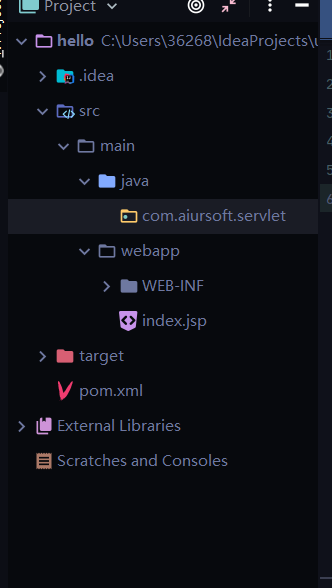

最近接触JavaWeb开发，发现这个东西让我很迷，什么JRE、JDK、JAVA EE，被一堆名词绕的晕头转向(.NET Core大法好)。最终找到了一些较为清真的配置方法。
Warning：Visual Studio Code写Java真的不是很舒适……本人(Visual Studio系列忠实用户)踩坑，所以还是推荐使用IDEA吧(本人使用的是IDEA 2020.2.2)。
Warning：OpenJDK与OracleJDK并不相同……
Warning：Tomcat10中已经对javax包进行了重命名，更名为Jakarta。
Warning：config等目录根据个人喜好配置，做法都是一样的。
JDK
下载 JDK
下载JDK，注意JDK分为OpenJDK和OracleJDK，区别如下：
- 两者的授权协议不同，OpenJDK采用GPL协议放出，而OracleJDK则采用JRL放出；
- OpenJDK不包含Deployment部署功能
- 3、OpenJDK源代码不完整。
本人使用的是OracleJDK，OracleJDK14下载链接：https://download.oracle.com/otn-pub/java/jdk/14.0.2+12/205943a0976c4ed48cb16f1043c5c647/jdk-14.0.2_windows-x64_bin.exe?AuthParam=1598841872_b08904c3928a9a8fb8184214a7011578
记得下载zip等压缩包版本(别的我也没用过)，作者下载的时候是最新版JDK，你看到这篇博客可能并非最新版，如果有喜欢学习新知识的同学，可以尝试使用最新版。
配置JDK
我以前一直不理解JAVA_HOME等单独配置环境变量的作用(环境变量过长字符除外)，后来我才发现这里是使用约定大于配置的思想，很多应用做了一个约定，规定这些环境名、环境值该怎么写(emmmmmm……)
推荐创建一个config文件夹来专门存放各种关于环境配置的文件夹(个人习惯，这样电脑文件很整洁)
将下载的JDK解压到创建的config文件中，然后打开配置环境变量页面。
添加JAVA_HOME环境，路径就是解压后的JDK路径
如果你是JDK8以及JDK8之前的版本，此处应该不同，参考Tomcat闪退错误清单，里边有详细解释。
JDK8之后的JDK已经不再耦合JRE，而是定制JRE，此处不详述(你可以发现JDK目录中并不包含jre文件夹)，将JRE_HOME设置为JDK路径即可。
JDK8及之前版本配置
JDK8以及之前的版本的JDK目录中包含jre文件夹，将该目录设置为环境变量即可，一般情况下，是JAVA_HOME配置目录后加\jre。
JDK配置完毕
TOMCAT
下载Tomcat(10)
下载Tomcat，Tomcat10下载链接：https://mirrors.bfsu.edu.cn/apache/tomcat/tomcat-10/v10.0.0-M8/bin/apache-tomcat-10.0.0-M8-windows-x64.zip
配置Tomcat服务器
将Tomcat的压缩包解压到创建的config文件夹中，配置环境变量，新建环境变量：
这两个是启动Tomcat所需要的，不详述(写起来太多啦)，这背后还有些小故事，可以百度……
配置CATALINA_HOME：
配置CATALINA-BASE：
Maven
下载Maven
Maven3.6.3下载链接https://mirrors.bfsu.edu.cn/apache/maven/maven-3/3.6.3/binaries/apache-maven-3.6.3-bin.zip
配置Maven
将压缩包解压到config目录中，配置环境变量，新建环境变量：
配置MAVEN_HOME：
使用M2_HOME是因为maven版本原因，M2_HOME是maven2延续下来的名字，不详述，想了解背后故事可以百度……
配置M2_HOME:
打开Maven目录下的conf/settings.xml文件，在mirrors使用以下配置，(如果你有外网环境也可以不需要配置)，此处用的是阿里云Maven库：
Warning：阿里云更新了仓库所在位置，很多网上的博客坑很多，我配置的日期是2020年9月份，可能以后这个配置地址也会变，想要使用最精准的库，还是得看阿里云的文档！！！
1 | <mirrors> |
最终配置
Path配置
上边的配置有些是为了将环境变量配置到最终目录，Path环境变量最终配置如下：
因为我们配置了这些可复用的环境变量，所以 一行一行地复制下边的变量到你的环境变量中即可。
1 |
|
验证
在此之前，请确保环境变量已经完全配置完毕，保存，并将计算机重启，以免可能出现意外错误。
验证JDK
打开你喜欢的终端，输入以下内容
1 |
|
这将会产生以下输出(因版本不同可能会出现不同区别，但大致相同)，如果出现command not found输出，请检查环境变量。
验证Maven
在终端中，输入以下内容
1 |
|
这将会产生以下输出(因版本不同可能会出现不同区别，但大致相同)，如果出现command not found输出，请检查环境变量。
验证Tomcat
在终端中，输入以下内容
1 |
|
这将会产生以下输出(因版本不同可能会出现不同区别，但大致相同)，如果出现command not found输出，请检查环境变量。
Friendly Reminder：这一步将会自动打开新的Tomcat窗口显示服务器正在启动。
打开的Tomcat命令行窗口，这说明Tomcat配置是成功的：
Warning：你很有可能发现这里是乱码的，我们需要更改默认配置，本段最后给出配置方法
如果出现Tomcat闪退的情况，请查看我的Tomcat闪退错误清单那篇博客。
打开浏览器，输入：http://localhost:8080，这将会打开以下网页；
解决控制台乱码问题：
打开Tomcat目录/conf/logging.properties文件，使用文本编辑器编辑它。
将此处修改为GBK，保存该文件，重启计算机(避免玄学错误)，重新打开Tomcat乱码问题应该已经得到解决。
IDEA
安装IDEA
安装IDEA，使用了几天2020版本(2020.2.2)体验还可以，推荐使用Ultimate版本(功能比Community版本更全)听说stu版本是免费的，不过我没用过……如果是在校学生，可以申请免费Ultimate使用资格(真香，我酸了)，可以使用破解安装包，这个各位同学还是去百度一些做法吧，这里不便阐明。
配置IDEA主题
我是暗黑系风格追求者(我用的编辑器、IDE都是暗黑系)，所以使用IDEA怎么能没点暗黑系风格呢？
点击File => 选择Settings：
选择Plugins => Marketplace，搜索 Material Theme UI：
点击INSTALL 安装，刚好下边有 Atom Material Icons，我们顺便一起安装，没有的话搜索安装也是一样的，安装过后会提示重启IDEA。重启IDEA就可以看到效果……
配置IDEA开发环境
点击启动IDEA，如果有项目在IDEA中运行可以点击File => Close Project 选项，这将关闭IDEA中的项目退出到初始页面。
以下是IDEA的初始界面，点击Configure，选择settings：
Build Execution Deployment菜单下有一个Maven选项，点击Maven，配置Maven home directory 和 User settings file以及Local Repository：
Maven Home Directory：这是Maven主目录，应与上边配置的MAVEN_HOME是同一个目录，填写一样即可。
User Settings File：
在Maven目录下的conf文件夹中存放着settings.xml文件，这是用户Maven的xml文件(我好像是在说废话)
Local Repository：
这是Maven的本地仓储，所有Maven下载的包都会被存放在这里，Maven本身是没有这个文件夹的，我们需要手动创建文件夹，然后命名为maven-repo
点击Apply然后点击OK退出IDEA的初始界面。
使用IDEA创建JAVA WEB项目
Friendly Reminder：使用mvn命令行创建的WEB项目一样很干净，但大多数人貌似不太喜欢终端……所以我还是按大众的方法来吧：
点击New Project：
选择Maven，勾选Create From Archetype，找到后缀为webapp的项目
Warning：这里可以发现有两个webapp，我们可以看到有一个是maven-archetype-webapp，很显然我们需要maven的项目模板，点击选中它。
点击NEXT，来到JAVA Web 所谓的GAV界面
Location表示本地存储位置，可以自己选择，但通常我不会去更改默认存储位置，要统一管理这些项目文件，这样更整洁不是吗？
G：GroupID => 可以认为是项目的归属，一般以com/cn/…..打头，每个都有不同含义，不详述，假设该项目归属Aiursoft，那么就可以这样写：com.aiursoft
A：ArtifactID => 这个是项目名称，而且通过更改Name选项，会发现ArtifactID也会跟随更改。
V：Version => 版本……不详述，想了解可以百度
点击NEXT，这里如果你配置了前几步Configure => settings 这个地方的Maven并且成功的话，那么这里应该是你的Maven配置，而不是系统默认配置：
点击FINISH，MAVEN将会帮助你构建项目……
JAVA WEB Project
创建出来的界面大概长这个样子：
我们应该最先关注下方终端提示，看到BUILD SUCCESS表示项目构建完成。
最右方Maven是IDEA内置的Maven控制台，点击Dependencies下拉框可以看到我们项目的依赖，还有一些依赖树等等功能可以使用。
最左边是Maven创建的很干净的JavaWEB项目结构
中间是代码编辑区域，可以看到中间区域IDEA自动打开了pom.xml文件这是管理整个WEB项目的核心配置文件build以及依赖的添加都可以在此文件中更改。
配置
点击Run => Edit Configuration…或右上角ADD CONFIGURATION：
点击+号，找到Tomcat Server选项下的Local选项点击，然后点击右下角OK，添加完成。
Tomcat Local：表示本地Tomcat服务器 Remote 表示远程Tomcat服务器，很显然我们需要本地Tomcat服务器
选中我们创建好的服务器，只需要关注我箭头标记的选项就可以了：
- Name：表示服务器启动时候的名称，如果没有强迫症(因为这个服务器名字还带版本号确实有点别扭)默认就可以。
- URL：表示服务器默认地址
- JRE：此处默认应该是项目使用的JRE，如果发现不是，可以更改为自己的JRE，就是上边配置的JRE_HOME那个路径
- HTTP port：默认就是Tomcat的8080端口，如果有端口冲突的情况，请更改，如果没有则默认就可以。
以上选项检查完毕，点击FIX或者点击菜单栏的Deployment：
点击右边的+号选择Artifact
这弹出了一个对话框让我们做选择，选项是 项目名:war 以及项目名:exploded 这是选择我们希望使用哪种方式打包该WEB项目：
- war：项目将以war包的形式加载进Tomcat服务器中，不支持热部署
- war exploded：项目将以war包的形式加载进Tomcat服务器中，支持热部署
很显然我们现在选择哪个都是可以的，我这里就选择war吧。
不知道什么是热部署的小伙伴，可以百度……
点击OK，完成配置
可以发现Deploy at the server startup列表下多了一个 项目名:war 的一个选项，如果你勾选了 项目名:war exploded这个选项，那么应该是 项目名:war exploded ，两者都是可以正常启动的，只是热部署与不是热部署的区别
哦对，还有就是下边的Application Context不一样，这个是项目的根访问路径，你选择了war那么应该默认是：项目名_war 预期相反的是：项目名_war_exploded 。这个路径是可以更改的。因为是演示项目，所以我也就不更改了。
点击OK，完成配置
可以看到我们的项目启动栏旁边已经有绿色的小三角了，这表明我们已经配置完成了

启动项目
使用快捷键Ctrl + F5或者点击那个绿色的小三角或者点击上方菜单栏中的Run => Run ‘Tomcat …..’ 这个应该是你刚才配置的Tomcat服务器，稍等服务器启动，IDEA会自动打开我们刚才配置的Default启动浏览器，或者手动打开浏览器，输入http://localhost:8080/hello_war/ 可以看到页面上输出了一个Hello World。
关闭浏览器，关掉IDEA中的Tomcat服务器(绿色小三角旁边的红色小方块)，打开项目目录/src/main/webapp/index.jsp
可以发现index.jsp中的内容正是Hello World。
创建并运行Servlet
在此之前我不妨先说说目录结构及文件
- src：写过项目的人应该都知道src表示包含的意思，我们写的源代码一般都放在这个文件夹中
- target：运行时生成的文件夹，该文件夹中保存了项目真实文件、项目打包之后的war包
- pom.xml：Maven核心配置文件，依赖项等都在此配置
在src/main下创建文件夹并命名为java，该文件夹将存放我们的java源文件
将其文件夹标记为sources文件夹
在java文件夹下右键 => new => package 起一个名字，最好和项目GroupID一致+你要创建的文件夹中存放的类型(这是我的个人习惯)，比如我们这里准备存放servlet，就可以采用com.aiursoft.servlet
更改完成的项目目录结构如下：

右键点击刚创建的package，new => Java Class：
命名规则最好以类名+Servlet的方式命名，比如我想创建一个Hello Servlet，那么我创建的Java文件名称就应该是HelloServlet.java，命名过程我就不再重复……
创建好的Java文件如下，这是一个很普通的Java类：
我们需要对其做一些更改，使其变成Servlet。可以继承HttpServlet类来达到这一目的，但是很显然我们没有所需要的依赖，我们需要下载一些依赖项。
Warning：寻找最合适的依赖项很简单，打开Tomcat目录/webapps/examples/servlets这里边有很多Servlet模板，在这里边寻找的依赖才是最合适的。
假设我们打开helloworld.html这个文件可以看到这里边引用了java.io.;如果你是Tomcat10的用户，那么你会惊奇的发现居然引用了 Jakarta.servlet.\; 而并不是引用javax。
Tomcat10对javax包进行了重命名，重命名为Jakarta，(网上资料少之又少)这个玩意儿哪里去找呢？打开https://mvnrepository.com/搜索：Jakarta.servlet，结果如下
点击Jakarta Servlet
选择版本：M1 M2我都测试过都是可以正常使用的：
复制Maven框中的内容：
将内容复制到项目的pom.xml中的dependencies标签下，点击Maven控制台的刷新按钮

可以看到依赖已经被更改
编写HelloServlet类，修改代码如下：
1 |
|
打开项目的web.xml文件，在web-app标签下增加servlet配置：
1 |
|
servlet：表示配置的本地servlet
servlet-name：主要目的是将servlet与servlet-mapping关联起来，servlet下的servlet-name与servlet-mapping下的servlet-name要相同
servlet-class：表示Servlet所处的包路径
servlet-mapping：表示真实文件和服务器需要的文件之前的映射
servlet-name：对应servlet中servlet-name
url-pattern：表示Web资源最终的映射路径(也是最终的访问路径)
运行项目，在URL栏中输入http://localhost:8080/hello_war/hello 可以看到以下输出：
至此你已经学会了配置环境 => 使用Maven => 如何挑选合适的Tomcat依赖项 => 编写简单的Servlet程序。
原创不易，写这一篇好累……
如果我的博客中存在问题，请发邮件到：erosionzhu@outlook.com，Thank you